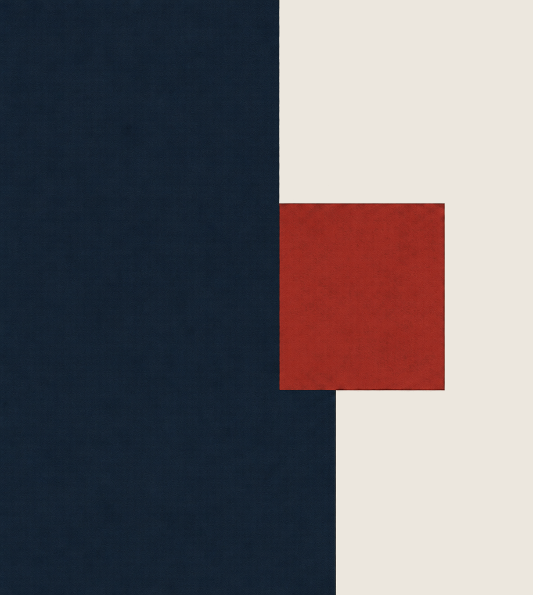

The Cornerstone · The signature
The Cornerstone
Harbor Navy wall with the Brick Red cornerstone on an Ivory ground. It always bleeds off the edge it enters from.
The brand's most recognizable visual element. Used consistently across every surface. Never decorative.
The device has a single version: the Harbor Navy wall with its Brick Red cornerstone.

Harbor Navy wall with the Brick Red cornerstone on an Ivory ground. It always bleeds off the edge it enters from.
Cover the logo. A Harbor Navy wall entering from one edge with a single Brick Red square set flush in its cut should still read as Bastion before any name appears.
The construction reference. How to draw it, weight it, place it.
A heavy Harbor Navy wall enters from one edge of the frame and bleeds off the three edges behind it. One solid Brick Red square sits flush inside a cut at the wall's open face, like the first stone laid in a building. Hard corners, flat matte color, faint paper grain. It reads as Bastion without the monogram and stands for the Promise: built in from day one.